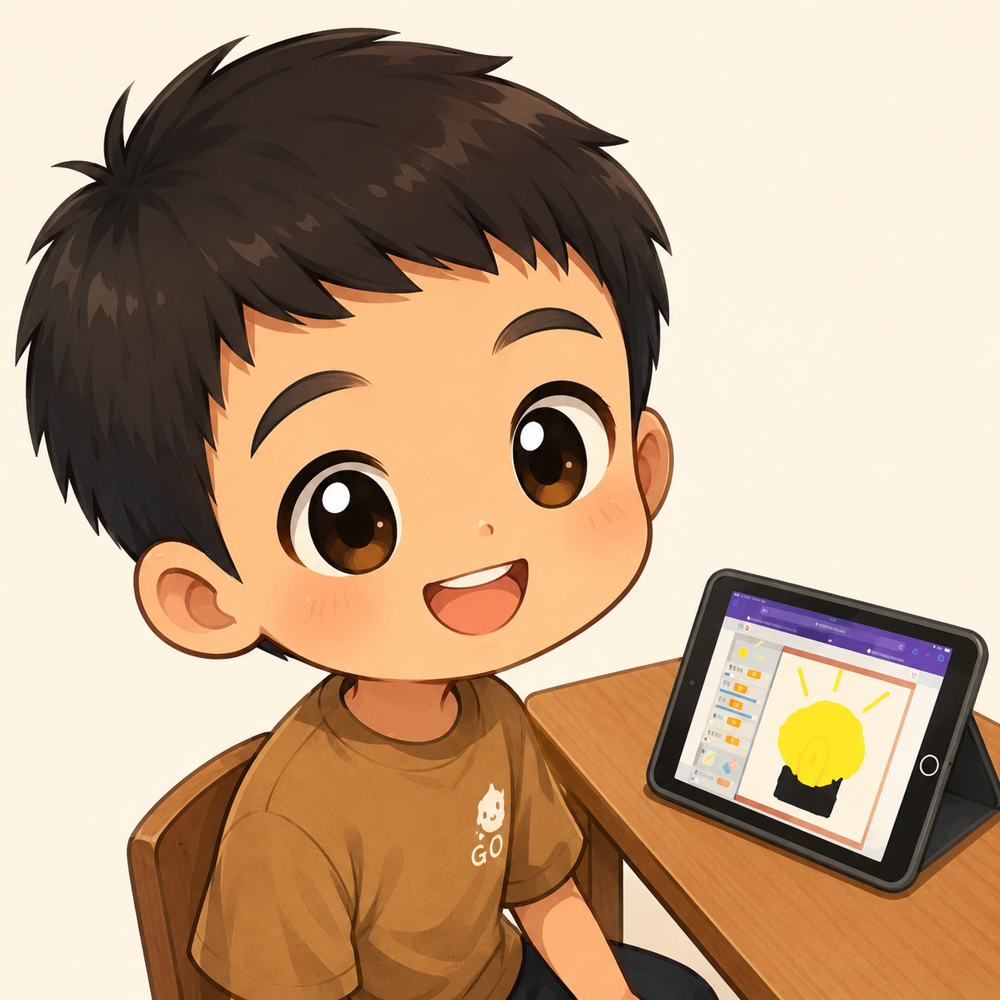

👋 哈囉！我是 Jack
歡迎來到我的個人網站！我今年國小升五年級。我很喜歡跟電腦一起玩，這幾天我學會了用程式邏輯控制 Scratch 遊戲，還學會了怎麼跟 AI 助手 Gemini 下指令。這個網頁是我自己看著程式碼、用 AI 慢慢反覆測試修改出來的喔！
✨ 關於我的小祕密

🎮 我最喜歡的事
我最喜歡在放學後打電腦遊戲和研究積木！自從上了 Scratch 課之後，我發現原來自己動手做遊戲，比單純玩別人的遊戲還要更有成就感！

🏀 我最喜歡的運動
除了坐在電腦前，我也聯很喜歡去球場打籃球！運球和投籃都需要不斷練習，就像寫程式要不斷 Debug 一樣。希望我的投籃命中率能跟我的程式碼一樣準！

🤖 我的超級 AI 拍檔
在營隊裡，Gemini 是我的最強助教！當網頁跑版或圖片出不來的時候，我會把程式碼貼給它，它就會溫柔地告訴我哪裡寫錯了。學會和 AI 溝通真的超酷的！